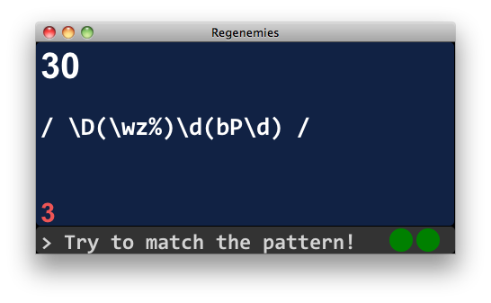

This is a very simple game implemented in Clojure. You'll be presented with a random regular expression. Type in a string that the regex matches and hit enter for 10 points. You'll note that there's a countdown on the regex. When that reaches zero, you lose a life. After you lose 3 lives, game over.
Here's a screenshot:
The current score's in the upper left, countdown's the number in the lower left, whatever you've typed so far shows up in the bottom, and the green dots in the lower right corner are your lives.
The regex window will turn yellow when the text you've entered matches the regex so you can hit enter right away. Every 100 points, you'll "level-up" meaning that you'll get to work on multiple regular expressions simultaneously.
Good luck. Click below to play.